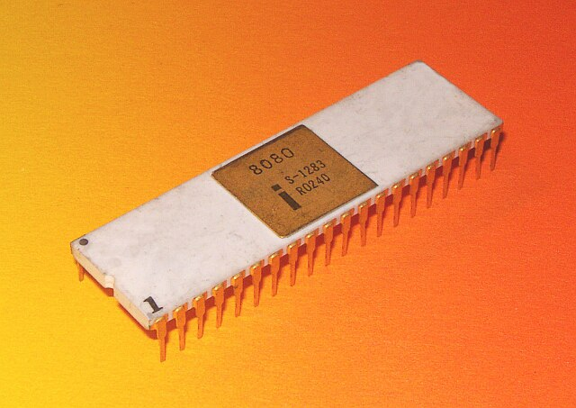
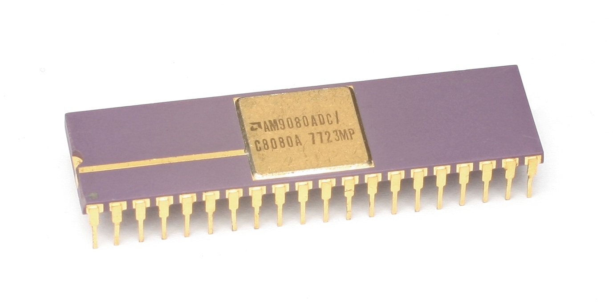
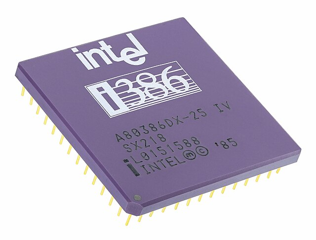

Introducción
La historia de los microprocesadores es fascinante y fundamental en el desarrollo de la tecnología moderna. También conocido como CPU, es un circuito integrado que contiene millones de pequeños componentes electrónicos, como transistores, que realizan cálculos y operaciones lógicas.
Desde su invención en la década de 1970, los microprocesadores han evolucionado rápidamente, pasando de ser simples chips que podían realizar operaciones básicas a ser procesadores capaces de realizar tareas complejas y sofisticadas.

En esta historia, se pueden encontrar grandes hitos como la creación del primer microprocesador comercial, el Intel 4004, en 1971 o el desarrollo del primer procesador de 32 bits, el Motorola 68000, en 1979. Desde entonces, los microprocesadores han ido evolucionando para adaptarse a las necesidades de los usuarios, permitiendo el desarrollo de nuevas tecnologías y dispositivos.
Los Inicios de los Microprocesadores
En la década de 1960, las computadoras eran grandes y costosas, y solo estaban disponibles para empresas y gobiernos. Los científicos y los ingenieros comenzaron a buscar formas de hacer que las computadoras fueran más pequeñas y económicas. Uno de los primeros intentos fue el desarrollo del microprocesador, un circuito integrado que contenía todos los componentes necesarios para realizar cálculos.
En 1971, Intel, una empresa de tecnología fundada en 1968, lanzó el primer microprocesador comercialmente disponible, el Intel 4004. Este microprocesador de 4 bits fue diseñado para ser utilizado en calculadoras y otros dispositivos electrónicos especializados. El 4004 fue capaz de realizar alrededor de 60,000 operaciones por segundo, un gran avance para la época.

Línea del Tiempo
Intel 4004
El primer microprocesador comercial de un solo chip. Revolucionó la industria al integrar todos los componentes de la CPU en un único circuito integrado.
AMD Am2900 Series
Familia de chips bit-slice que permitía construir procesadores personalizados. Fue ampliamente utilizado en sistemas embebidos y mainframes.
Intel 8080
Estableció el estándar para los microprocesadores de 8 bits y fue fundamental para el nacimiento de la industria de las computadoras personales.
AMD 8080 Clone
Versión compatible con el Intel 8080, destacándose por su bajo costo y alta fiabilidad.
Intel 8086
Introdujo la arquitectura x86 que dominaría la industria de las PC durante décadas.
AMD Am286
Primer procesador AMD completamente compatible con la arquitectura x86 de Intel, ofreciendo mayor frecuencia de reloj.
Intel 386
Primer procesador de 32 bits para PC que podía ejecutar múltiples tareas y manejar memoria virtual.
AMD Am386
Versión mejorada del Intel 386, con mayor frecuencia de reloj y compatibilidad total con x86.
Intel Pentium
Marcó el inicio de la era moderna con arquitectura superescalar y cache L1 separada.
AMD K5

Primer procesador diseñado íntegramente por AMD, compatible con x86 y optimizado para aplicaciones de oficina.
Core 2 Duo
Introdujo el procesamiento multi-núcleo al mercado masivo, duplicando el rendimiento.
AMD Athlon 64
Primer procesador de 64 bits para consumidores, estableciendo un nuevo estándar en rendimiento.
AMD Ryzen
Revivió la competencia en el mercado de CPUs con arquitectura Zen y alto rendimiento por núcleo.
Tabla Comparativa de Microprocesadores
| Año | Modelo | Fabricante | Bits | Frecuencia | Transistores | Innovación clave |
|---|---|---|---|---|---|---|
| 1971 | Intel 4004 | Intel | 4-bit | 740 kHz | 2,300 | Primer microprocesador comercial |
| 1975 | AMD Am2900 Series | AMD | 4-bit slices | N/A | N/A | Familia de chips bit-slice |
| 1974 | Intel 8080 | Intel | 8-bit | 2 MHz | 6,000 | Base para computadoras personales |
| 1975 | AMD 8080 Clone | AMD | 8-bit | 2 MHz | 6,000 | Compatible con Intel 8080 |
| 1978 | Intel 8086 | Intel | 16-bit | 5-10 MHz | 29,000 | Introdujo arquitectura x86 |
| 1983 | AMD Am286 | AMD | 16-bit | 8-20 MHz | 134,000 | Mejora de la arquitectura x86 |
| 1985 | Intel 80386 | Intel | 32-bit | 16-33 MHz | 275,000 | Primer procesador multitarea |
| 1991 | AMD Am386 | AMD | 32-bit | 20-40 MHz | 300,000+ | Clon mejorado del Intel 386 |
| 1993 | Intel Pentium | Intel | 32-bit | 60-66 MHz | 3.1 millones | Arquitectura superescalar |
| 1996 | AMD K5 | AMD | 32-bit | 75-133 MHz | 4.3 millones | Competencia directa con Pentium |
| 2003 | AMD Athlon 64 | AMD | 64-bit | 2 GHz+ | 106 millones | Primer CPU de 64 bits para consumidores |
| 2006 | Intel Core 2 Duo | Intel | 64-bit | Dual Core | 291 millones | Procesamiento multi-núcleo masivo |
| 2017 | AMD Ryzen | AMD | 64-bit | 3.6 GHz+ | 4,800 millones | Arquitectura Zen y rendimiento por núcleo |
Impacto en la Sociedad Moderna
Revolución Digital
Los microprocesadores han sido el motor de la revolución digital, permitiendo la miniaturización de dispositivos y el aumento exponencial en capacidad de procesamiento.
Comunicación Global
Han hecho posible la comunicación instantánea global a través de smartphones y dispositivos conectados.
Innovación Tecnológica
Impulsan avances en inteligencia artificial, realidad virtual y computación cuántica.
Transformación Industrial
Han revolucionado la automatización industrial y la fabricación inteligente, aumentando la eficiencia y precisión.
El Futuro de los Microprocesadores
- Computación cuántica: Promete resolver problemas complejos mucho más rápido que los procesadores clásicos.
- Chips neuromórficos: Inspirados en el cerebro humano para IA eficiente.
- Límites físicos: Exploración de nuevas tecnologías como la fotónica.
- Sostenibilidad: Diseños con menor consumo energético.